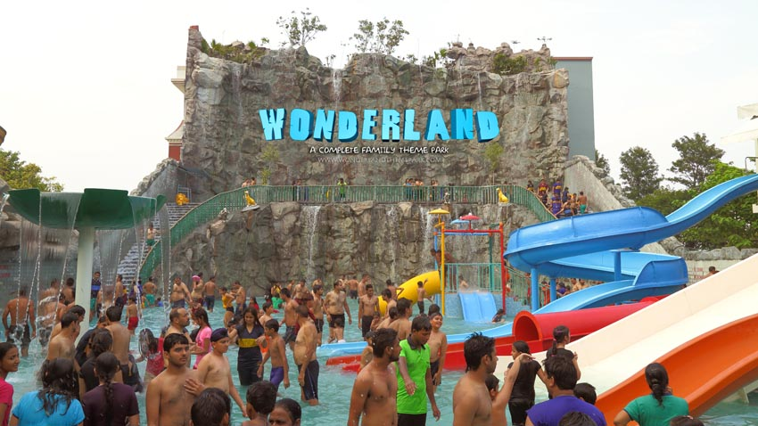
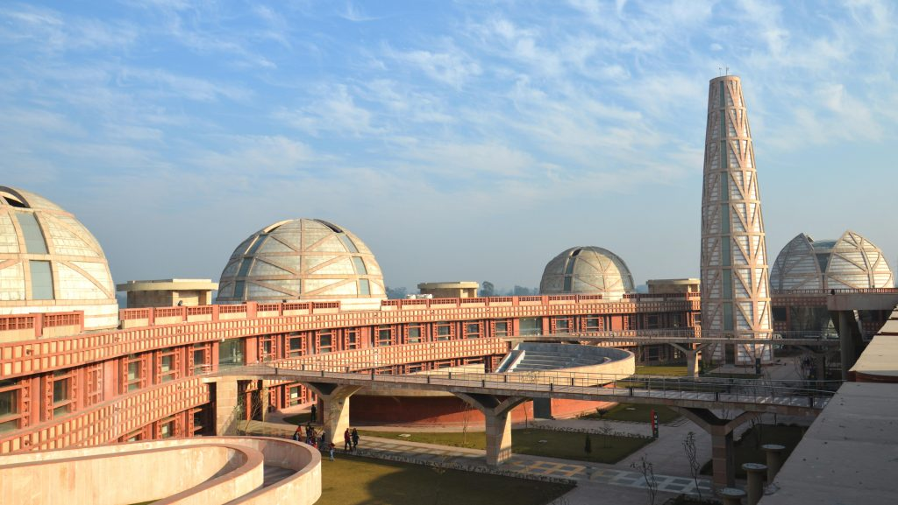
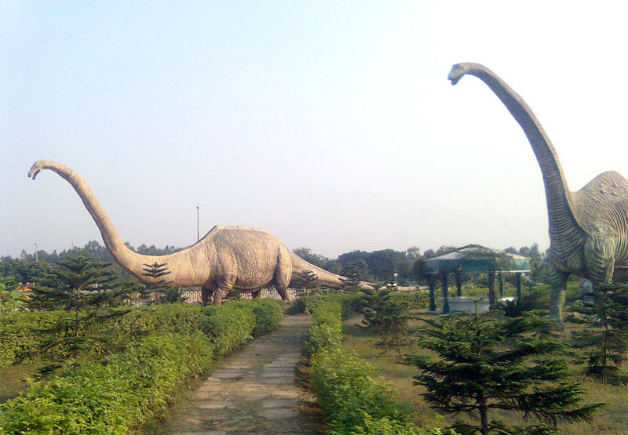

Wonderland Theme Park, spread over 11 acres, is located about 6 km from Jalandhar bus terminus and 8 km from the railway station on Nakodar Road. This park offers many thrilling rides.
The water rides include bumper cars, flying jets, horror house, boating, kiddies’ boating, play house, flying dragon and a slide splash. Among the several attractions, the wave pool is probably the most popular.
There is an aqua dance floor, where visitors can dance to the tunes of the latest Punjabi songs. The dance floor is underneath a canopy, which has artificial clouds from where the water comes down like a rainfall. The Dry Park is open throughout the year, but the Water Park is closed during winters.
Timings – Opening & Closing:- Monday – Friday: 9.00 AM – 10.00 PM , Saturday: 9.00 AM – 10.00 PM , Sunday: 9.00 AM – 10.00 PM , Public Holidays: 9.00 AM – 10.00 PM
visit site
Timings – Opening & Closing:- Monday – Friday: 9.00 AM – 10.00 PM , Saturday: 9.00 AM – 10.00 PM , Sunday: 9.00 AM – 10.00 PM , Public Holidays: 9.00 AM – 10.00 PM
.gif) .gif) .gif) .gif) .gif) .gif) .gif) .gif) |

Jang-e-Azadi Memorial Jalandhar (Kartarpur)
The Government of Punjab had conceptualized a mega project named as Punjab Freedom Movement Memorial in commemoration of the unparalleled sacrifices of Indian’s & Punjabi’s for independence of India. The project was aimed at setting up integrated memorial complex for the heroes of the freedom struggle on 25 acres of land in the periphery of Kartarpur. The total estimated project cost is Rs. 315 cr.
The Memorial is aimed at disseminating knowledge about the rich cultural heritage of the State in the minds of youngsters. The site, which falls on the Jalandhar-Amritsar national highway, was carefully selected by the State Government keeping in mind its easy accessibility to visitors and to add another tourist destination for those on way to the Golden Temple. Punjab Freedom Movement Memorial Foundation was formed by Government of Punjab for implementation of this prestigious project
visit site
The Memorial is aimed at disseminating knowledge about the rich cultural heritage of the State in the minds of youngsters. The site, which falls on the Jalandhar-Amritsar national highway, was carefully selected by the State Government keeping in mind its easy accessibility to visitors and to add another tourist destination for those on way to the Golden Temple. Punjab Freedom Movement Memorial Foundation was formed by Government of Punjab for implementation of this prestigious project

The biggest project of its kind in Northern India, the Science City has been set up in 72 acres of land in the of heart of Punjab, on Jalandhar- Kapurthala Road. It is intended to inclucate the scientific aptitude & temperament, to fire the imagination and creativity, foster the spirit of enquiry and exploration among the masses, especially in the young minds.
The subject areas covered include physical, applied, natural and social sciences, engineering, technology, agriculture, health sciences, energy, industries, human evolution and civilization, the environment, ecosystems, Jurassic parks as well as frontier areas like space, nuclear science, information technology, robotics and Bio-technology..
visit site
 The famous Devi Talab Temple is situated in the heart of Jalandhar city, just 1 km from the railway station. It is believed to be more than 200 years old. Dedicated to Maa Durga.
Devi Talab Mandir is the most prominent place/structure of modern Jalandhar City. There is a temple of shakti pith which is one of the 51 shaktipithas which is know as Tripurmalini. Devi's right breast fell here. The sacred pond is 200 years old. Beside the main Devi Talab Mandir, is an old Temple of Goddess Kali. One of the prime attractions of the temple is an old tank, which is considered to be sacred by the Hindu devotees.The temple has a structure resembling the Amarnath Cave temple in Jammu and Kashmir.
The famous Devi Talab Temple is situated in the heart of Jalandhar city, just 1 km from the railway station. It is believed to be more than 200 years old. Dedicated to Maa Durga.
Devi Talab Mandir is the most prominent place/structure of modern Jalandhar City. There is a temple of shakti pith which is one of the 51 shaktipithas which is know as Tripurmalini. Devi's right breast fell here. The sacred pond is 200 years old. Beside the main Devi Talab Mandir, is an old Temple of Goddess Kali. One of the prime attractions of the temple is an old tank, which is considered to be sacred by the Hindu devotees.The temple has a structure resembling the Amarnath Cave temple in Jammu and Kashmir.
© 2018-2019 karan mehra/All Rights Reserved/A64 11815793 cap116